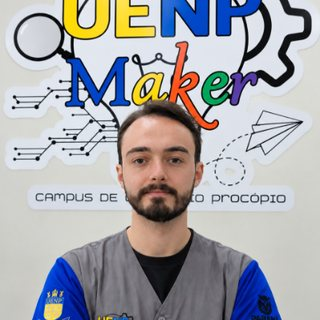

João Pedro Sena

Bolsista
Espaço Maker UENP – Campus Cornélio Procópio
Bolsista do Espaço Maker da UENP – Campus Cornélio Procópio. Colabora com projetos, oficinas e no atendimento aos usuários do laboratório.